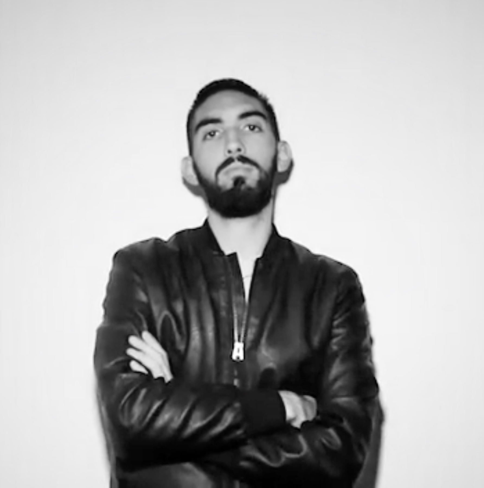

— Dreamer but grounded, perfectionist with a great desire to improve.

I’m based in Milan but I come from Molise, a small rural region in the South of the Italy. I’m passionate about sports, video games, animated films and theatre. I have acted since when I was child and today I often participate in courses or seminars organised by theatre companies. I like soccer, I tried to play, but with poor results; so I became a referee.
From 2016 to 2018 I collaborated with Polimi Sport, for which I managed the production of video content for social media channels. I’m a dreamer but grounded and perfectionist, I never consider a finished project until the time is over.
- 2008-2013 – High School Diploma at Liceo Scientifico Alfano da Termoli
- 2014-2017 – Bachelor Degree in Communication Design at Politecnico di Milano
- 2017-2019 – Master Degree in Communication Design at Politecnico di Milano
- 2019 – Exchange experience at Centennial College in Toronto
- 2017-2019 – Social Video Manager at Polimi Sport
- 2018 – Video Maker for Alumni Polimi
- 2018 – Graphic Designer and Video Maker for Atlantico Fest Workshop directed by Marco Mengoni
- Brand Identity
- Digital Advertising
- Digital Strategy
- Digital Presentation
- Video Making
- UX/UI Design
- Web Design
- Animation
- Motion Graphics
- Editorial Design